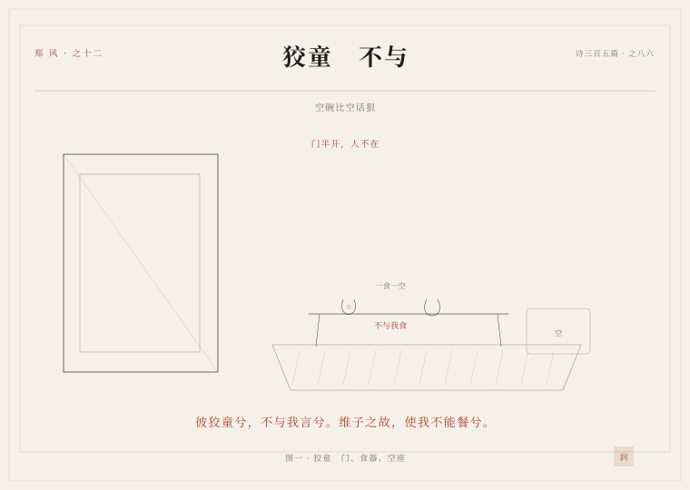
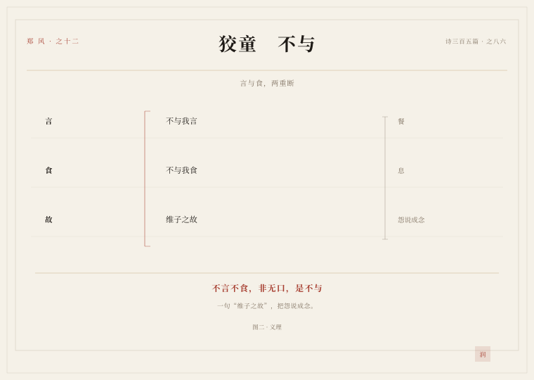

第八十六篇 狡童
郑风 · 之十二 SJ086
朗读 · 普通话
依经文原文朗读，章次不读出；配古琴底乐，不改速、不加拖腔。全库同一音色（豆包 TTS），非播音员录制。
一 解题
诗三判：
- 谁在说：一个被“狡童”冷落的人。她/他说：那个狡童不跟我说话，不跟我吃饭；因为你，我吃不下，睡不安。全诗只写“你不跟我”，不写“我恨你”。
- 说什么事：两章，只换“言/食”“餐/息”。从“不说话”到“不共食”，从“吃不下”到“睡不着”；冷落一层比一层深，人的反应一层比一层软。
- 为何编在此：郑风之十二。085 写“不倡”，086
写“不言”。一个该先唱而不唱，一个该说话而不说；都是“口”的事。
《毛序》：“《狡童》，刺忽也。不能与贤人图事，权臣擅命也。”
朱子《诗集传》：“赋也。狡童，狡狯之童也。○此亦淫女见绝而戏其人之词。”朱子又谓“言悦己者众，子独不与我言，使我不能餐食”，与毛序“刺忽”异。
本库的看法：《狡童》是一首把“冷落”写成“吃不下”的诗。
诗不写“你坏”，只写“你不跟我说话”；不写“我恨”，只写“我吃不下”。“维子之故”四个字，把怨说成念：不是“因为你坏”，是“因为你，我才这样”。冷落不是骂，是不给；不给比骂更狠。
先辨四事：“狡童”是狡狯之童、戏称，不是“狡猾的儿童”；“言”是说话，不是“言语”；“食”是共食，不是“食物”；“息”是呼吸、休息，不是“消息”。
二 经文
第一章
彼狡童兮，不与我言兮。
维子之故，使我不能餐兮。
第二章
彼狡童兮，不与我食兮。
维子之故，使我不能息兮。
分章：二章，章四句。
三 韵读
- 一章：言、餐，元部；四句一韵。
- 二章：食、息，职部；四句一韵。
读法：一章元部，开口；二章职部，收口。从“言”到“食”，从“餐”到“息”；话断了，气也短了。
四 字义与名物
- 狡童：狡狯之童；戏称，带嗔。
- 言：说话、对言。食：共食。
- 维：因为。子：你。故：缘故。
- 餐：吃饭。息：呼吸、休息；睡不着。
- “不与我言”：不跟我说话；“不与我食”**：不跟我一起吃饭。由言到食，关系更近一层。
五 今译
那个狡童啊，不跟我说话啊。因为你，让我吃不下饭啊。
那个狡童啊，不跟我一起吃饭啊。因为你，让我睡不着觉啊。
六 章旨
- 一章：写“言”。不跟我说话，是冷落的开始；吃不下，是身体的回答。
- 二章：写“食”。不跟我共食，是关系的退一步；睡不着，是身体的更深回答。
- 总收：不言不食，非无口，是不与；一句“维子之故”，把怨说成念。
诗不骂，只把“吃不下”摆出来；身体比嘴诚实。
七 诗教
- 兴：直呼“彼狡童”，没有起兴；一张口就是人，诗很直。
- 观：观“不与”的冷。不是打骂，是不给一句话、不给一顿饭；冷落是无声的力。
- 群：两个人之间，话与食是最基本的“群”；话断了，群就断了。
- 怨：怨而不怒。“维子之故”是怨，也是留；真恨的人，不会说自己吃不下。
八 分寸与边界
- 不可把“狡童”当“狡猾的儿童”。它是戏称；一读成骂，末句的“念”就没了。
- 不可把“言”当“言语”。它是“跟我说话”；一读成名词，诗就成语法。
- 不可把“食”当“食物”。它是“共食”；一读成东西，关系就没了。
- 不可把“息”当“消息”。它是呼吸、休息；一读成信息，睡不着就成等信。
- 不可把“维子之故”当“因为你坏”。它是“因为你，我才这样”；一读成指责，诗就硬了。
九 存疑
- 诗旨：毛序“刺忽，不能与贤人图事，权臣擅命”；朱子“淫女见绝而戏之”。一政治，一私情；本库两存，以“冷落”读。
- “狡童”：朱子“狡狯之童”；一说指郑忽。从“戏称”，才见嗔。
- “食”：共食；一说“食禄”。从“共食”，才与“言”成对。
- “息”：呼吸、休息；一说“气息”。两读相近。
- 作者与年代：毛序不言作者；朱子以为“淫女”。是否刺忽，无确证。
十 跨典
- 《论语·泰伯》：“狂而不直，侗而不愿，悾悾而不信，吾不知之矣。”——“狂”而不直，可与“狡童”对读。
- 《礼记·曲礼上》：“食不言，寝不语。”——食与言相连；不与我言，也不与我食，是两重断。
- 《礼记·檀弓下》：“不食嗟来之食。”——食里有尊严；“不与我食”不是饿，是拒。
- 《诗本音》：二章韵读，言、餐元部，食、息职部，见卷三。
十一 双卡与图
双卡六对：
| 狡童（狡狯之童，戏称） |
狡童（狡猾儿童） |
| 言（说话） |
言（言语） |
| 食（共食） |
食（食物） |
| 维（因为） |
维（维护） |
| 餐（吃饭） |
餐（餐饭） |
| 息（呼吸、休息） |
息（消息） |

图一 · 狡童 门、食器、空座

图二 · 狡童 言→食，餐→息
读图三处：
- 门半开：图一左侧一扇门半开，门里一张席、两只碗，一只碗有饭，一只空。“不与我食”，空碗比空话狠。
- 不画脸：图一不画狡童，也不画说话的人；一画脸，冷落就成肖像。
- “维子之故”压底：图二两章并排，左“言→食”，右“餐→息”，底下一行“维子之故”。全诗的转折，就在这四个字。